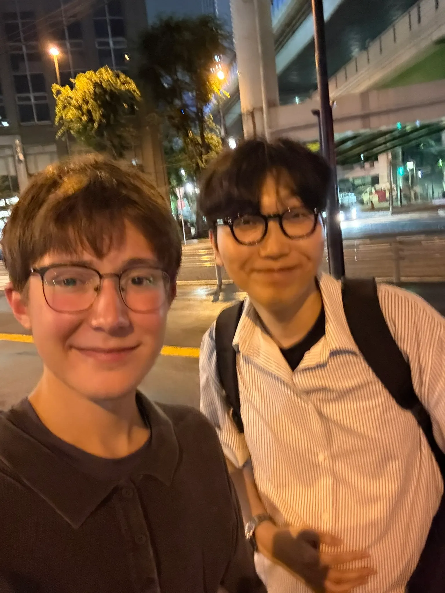

This summer was unforgettable
Thank you to everyone who supported me financially to get here, the goal was daunting but I prayed like I never have before
Thank you for being an answer to prayer.
A Moment to Pray
Pray for the People of Japan
In my time in Japan, I met many persons of peace, please continue to pray for these names:
- Omori
- Tristen
- Terry
- Aizawa (Kotaro)
- Kazu
- Chica
- Ryan
- Osama
- Shin
- Daniel
- Hina
- Ren'py
- Liam
- Virgil
- Kotskotu
- Alex
These are all people who mean so much to me. I long for them to experience God.
The full story
The Beginning
I began my journey in Japan in Mentone, Alabama, where we had our training. It was there that I met my team and we all got to know each other.
I then boarded my plane and played chess with the college student next to me. By the end of the 14-hour flight, after talking a lot about the Lord, he decided to give his life to Christ. Please pray for Benjamin that he would continue to seek after the Lord.

Getting used to Japan
I then landed in Haneda Airport, where I took a nap for 6 hours. Then once my entire team landed we all headed to our Airbnb.
When I got there, I realized how nice it was! I had my own room and desk. I spent many hours at this desk writing to the Lord and praying for God to move not only through us but in us.

We explored our first couple of days! We went to tons of shrines and explored some of Tokyo's greatest portions. We also ate a lot of curry — our mouths were on fire.
It was after our few days of exploration that we were given our assignments. We were going to be spending our days on different college campuses in Tokyo and invite students to events and to church.

Our Assignment and Struggles
Immediately I realized that this was not going to be easy. The Japanese people as a society function as a machine — they go and do what they need to do without sticking out too much, so we couldn't just talk to any random stranger as much as we wanted to.
This made it so hard to meet people, so we would sit and study our language and wait for the Spirit to tell us to talk to people. It was through blending in that we met some of the best persons of peace! And we made so many friends.

It was on this trip though that I learned that spiritual warfare is real! It's not just something to describe when life is hard. My team went through countless moments of weakness, whether it be the normalization of gossip, or just not being on the same page at all. The Lord gave me so much peace through it though when I fell on my face and worshipped the Lord. Psalm 55 really brought me through the rough seasons.
The Lord reminded me to pray, so I had to remind my team to pray at all times. The Lord is so faithful.
The biggest thing I learned is that peace in this world does not survive left idle. If I get peace, then wake up tomorrow and my peace is gone, what do I do? I go back to the source always.

Nearing the end
Nearing the end of our trip we had a lot of contacts. We were all in different portions of Tokyo sharing the gospel to our respective groups, and we were all anticipating leaving all the wonderful food behind.
At this point I had nailed conversational Japanese down, and late at night I developed an application for my team to learn the alphabet and basic words. It was called HammyKana! And if you'd like to try it, you can do so below!

It was also by the end of the trip that God had made it clear to me — he wants me to devote my life to him and to proclaiming the Gospel to the nations. I cannot deny any longer that I have a gift from him to learn languages ridiculously fast. I must devote my life to serving him faithfully in this regard; it gives me the most joy.
As we headed home we all prayed for God to continue working on Japan. Though Japan functions as a machine and has a hardened heart, God is bigger than all of it! And I know he knows what he's doing.
Thank you to everyone who made it possible for me to get to Japan. Your contribution made it possible for me to get here.
Thank you for being an answer to prayer.
A verse that inspired me to not give up and keep going when times were hard:
1 Corinthians 9:19–23 · ESV
19 For though I am free from all, I have made myself a servant to all, that I might win more of them. 20 To the Jews I became as a Jew, in order to win Jews. To those under the law I became as one under the law (though not being myself under the law) that I might win those under the law. 21 To those outside the law I became as one outside the law (not being outside the law of God but under the law of Christ) that I might win those outside the law. 22 To the weak I became weak, that I might win the weak. I have become all things to all people, that by all means I might save some. 23 I do it all for the sake of the gospel, that I may share with them in its blessings.
Every photo from the summer
Photos are on the way — check back soon.